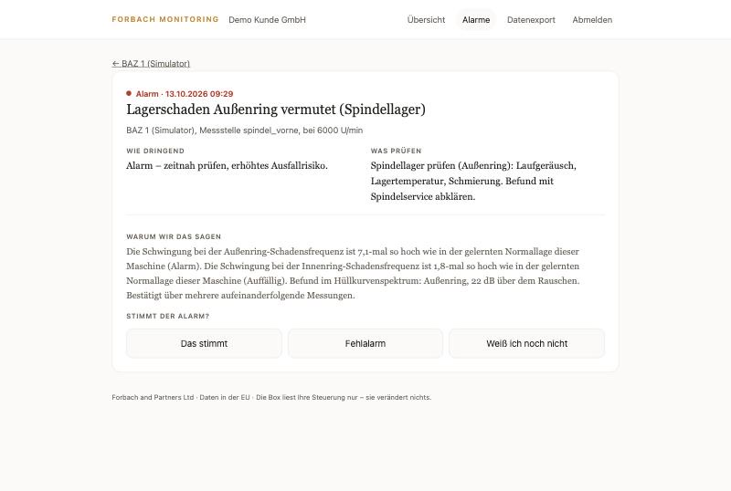
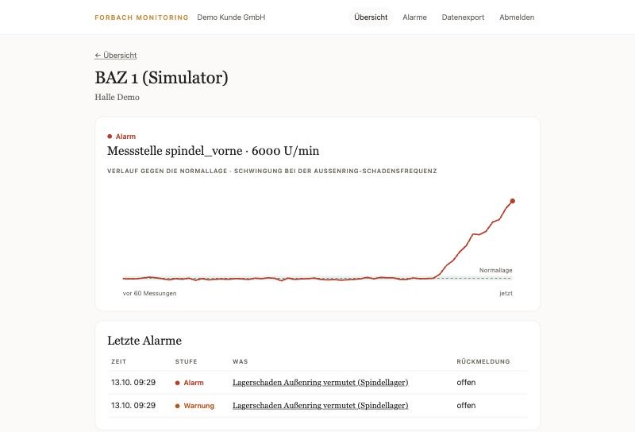

Zustandsüberwachung für CNC-Spindeln
Ein Spindellager fällt nicht über Nacht aus. Es kündigt sich an.
Lange bevor ein Lager hörbar wird, verändert sich sein Schwingungsbild. Wir messen diese Veränderung an jeder Spindel, vergleichen sie mit der gelernten Normallage der Maschine und sagen Ihnen, was sich verändert hat. Herstellerübergreifend und ohne in Ihre Steuerung zu schreiben.
- Steuerungen
- SINUMERIK · TNCSiemens und Heidenhain in einer Ansicht. FANUC folgt.
- Zugriff
- Nur lesendKeine Schreibfunktion im Code. Vierfach abgesichert.
- Ausgewertete Schäden
- 5 SchadensbilderAußenring, Innenring, Wälzkörper, Käfig, Unwucht.
- Speicherort
- DeutschlandVerarbeitung und Speicherung ausschließlich in Rechenzentren in Deutschland.
So funktioniert es
Drei Schritte. Kein Eingriff in Ihre Maschine.
Für Geschäftsführung und Werksleitung in einfachen Worten. Die technischen Details stehen unter Leistung.
- MessenEin Schwingungssensor sitzt am Spindelgehäuse, eine kleine Box an der Maschine. Die Box liest aus der Steuerung, wie schnell die Spindel dreht. Sie verändert nichts an Ihrer Maschine.
- VergleichenDie Software lernt, wie Ihre gesunde Spindel schwingt, und vergleicht jede neue Messung damit. Ein beginnender Lagerschaden verändert das Schwingungsbild lange bevor er hörbar wird.
- MeldenWeicht etwas ab, bekommt Ihre Instandhaltung eine Meldung in Klartext: welches Bauteil betroffen ist, wie dringend es ist und was zu prüfen ist.

Planen statt reagieren
Der Lagertausch kommt in die nächste Wartungspause, statt mitten in einen Auftrag zu fallen.
Liefertermine halten
Weniger ungeplante Stillstände heißt weniger Verschiebungen, Eilaufträge und Sonderschichten.
Folgeschäden vermeiden
Ein früh erkannter Lagerschaden kostet ein Lager. Ein später kann Spindel, Werkzeug und Werkstück kosten.
Umfang
Heute die Spindel. Der Rest folgt, wenn er funktioniert.
Auf dieser Seite steht nur, was das System heute kann. Was noch in Entwicklung ist, ist so gekennzeichnet. So erleben Sie im Pilotbetrieb keine Überraschung.
Spindel und Spindellager
VerfügbarSchwingungsmessung am Spindelgehäuse, ausgewertet mit dem Hüllkurvenverfahren. Das ist die etablierte Methode zur Früherkennung von Wälzlagerschäden. Verglichen wird immer mit der Normallage Ihrer Spindel, nicht mit einem fremden Durchschnitt.
Vorschubachsen und Kugelgewindetriebe
In EntwicklungSchleppfehler- und Lastverläufe zur Erkennung von Reibung und Umkehrspiel. Wird im Pilot mit aufgezeichnet, aber noch nicht bewertet.
Werkzeugwechsler und Kühlmittel
GeplantAuf unserer Roadmap. Heute kein Bestandteil des Angebots.
Verfahren
Nachvollziehbar statt Blackbox.
Ein Instandhalter stellt keine Maschine ab, weil ein Algorithmus ein schlechtes Gefühl hat. Er will wissen, welcher Wert sich wie verändert hat. Darum zeigt jede Meldung ihre Begründung.
Messen
Ein Schwingungssensor am Spindelgehäuse, dazu Drehzahl und, soweit verfügbar, Last aus der Steuerung über OPC UA.
Normallage lernen
Jede Spindel schwingt anders. Das System lernt zuerst, wie Ihre Maschine im gesunden Zustand klingt.
Abweichung bewerten
Kennwerte bei den Schadensfrequenzen werden gegen die Normallage geprüft. Ausschlaggebend ist der Trend, kein Einzelwert.
Melden mit Begründung
Sie sehen den Kennwert, das Schadensbild und die Stärke der Abweichung. Mit Ihren Rückmeldungen kalibrieren wir die Schwellen für Ihre Maschine.
Eine Vorhersage auf den Tag genau geben wir bewusst nicht ab. Das kann niemand seriös.

Datensicherheit
Ihre IT entscheidet in zehn Minuten.
Wir schreiben auf, welche Daten Ihr Werk verlassen, über welchen Port und in welche Richtung. NC-Programme, Zeichnungen und Bedienerdaten erfasst die Box nicht.
- AKeine SchreibfunktionDie Software enthält keinen Code, der auf eine Steuerung schreibt.
- BVorgelagerte SperreJede verändernde Anfrage wird blockiert, bevor sie die Steuerung erreicht.
- CAutomatische PrüfungTests stellen bei jeder Änderung sicher, dass kein Schreibpfad entsteht.
- DLese-BenutzerEigener Benutzer mit reinen Leserechten, bei SINUMERIK etwa SinuReadAll und AlarmRead.
| Richtung | Port | Zweck |
|---|---|---|
| Box → Steuerung | 4840 · OPC UA | Lesen, verschlüsselt (Basic256Sha256) |
| Box → Plattform | 8883 · MQTT/TLS | Kennwerte senden, sonst 443 |
| Box → Update-Server | 443 · HTTPS | Signierte Updates abholen |
| Von außen → Box | keiner | Keine eingehende Verbindung möglich |
Setzt Ihre Firewall TLS-Inspektion ein, braucht die Box eine Ausnahme. Sonst schlägt die beidseitige Zertifikatsprüfung fehl. Diesen Satz an Ihre IT, und die Sache ist geklärt.
Stillstandsrechner
Was kostet Sie ungeplanter Stillstand heute?
Für die Geschäftsführung: In einer Minute sehen Sie, was ungeplante Spindelschäden Ihren Betrieb pro Jahr, pro Monat und pro Arbeitstag kosten. Mit Ihren eigenen Zahlen, wir setzen keine Ersparnisquote ein. Rechner mit Erklärung öffnen
Ablauf
Wir zeigen es Ihnen an Ihrer Maschine.
- 20 MinutenErstgesprächWir klären, ob Ihre Steuerungen anbindbar sind. Wenn nicht, sagen wir es Ihnen.
- Per E-MailVorabklärungTypenschild, Softwarestand und OPC-UA-Optionen je Maschine. Ihre IT erhält das Sicherheitsblatt.
- Ein Tag vor OrtAnbindungLesender Zugang, Messstellen am Spindelgehäuse, Verbindungstest. Die Produktion läuft weiter.
- LaufendPilotbetriebNormallage lernen, Meldungen mit Begründung, Monatsbericht je Maschine.
Ansprechpartner
Sascha P. Forbach
Gründer, Geschäftsführer und Software-Architekt · Düsseldorf
„Die deutsche Industrie gewinnt nicht über den Preis. Sie gewinnt, wenn ihre Maschinen laufen, wenn sie laufen müssen.“
Wir sind in der Markteinführung und nehmen die ersten Fertigungsbetriebe auf. Im Erstgespräch sitzt Ihnen der Gründer gegenüber, kein Callcenter.
Nächster Schritt